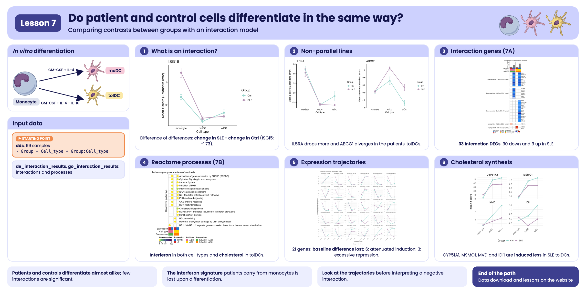
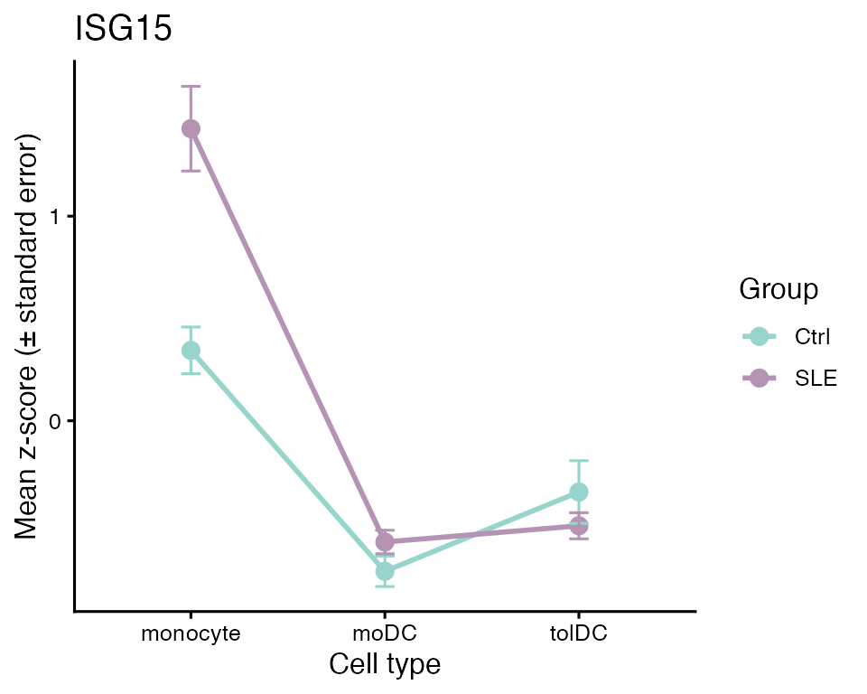
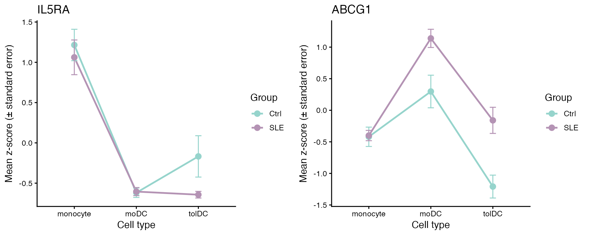
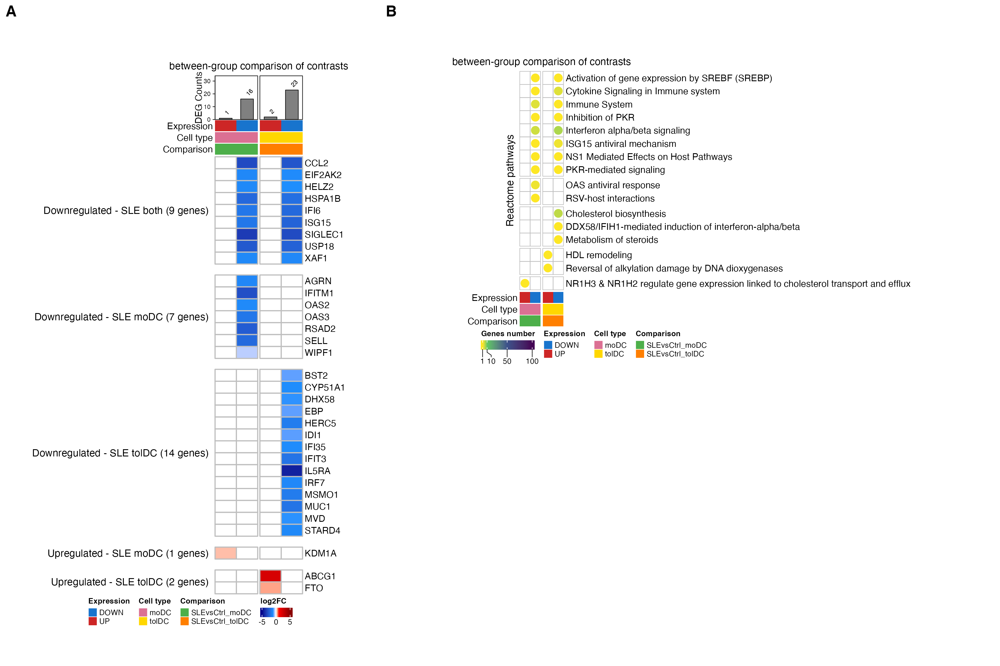
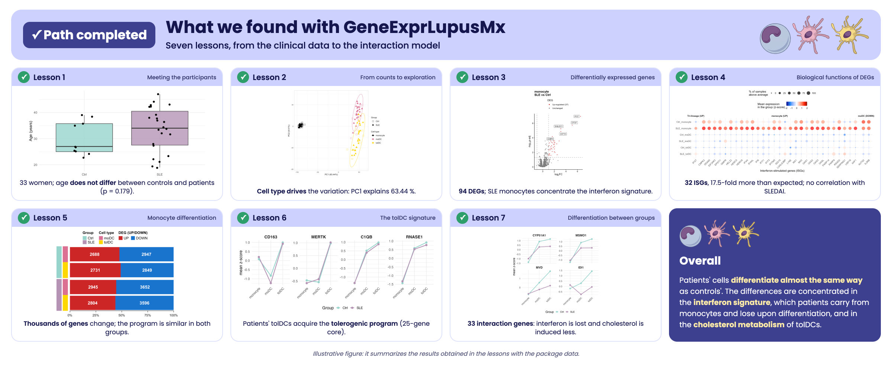

Lesson 7: Do patient and control cells differentiate in the same way?
Comparing contrasts between groups with an interaction model
2026-10-31
Código:vignettes/articles/l7_DEGs_between_groups_en.Rmd
l7_DEGs_between_groups_en.RmdWelcome
In lesson 5 we saw that, upon differentiation, the monocytes of patients and controls change thousands of genes, and that the changes look very similar. But “looking similar” is not “being the same”. In this lesson we ask the question statistically: are there genes whose change from monocyte to dendritic cell is different in lupus patients? To answer it we will use an interaction model, which directly compares the contrasts of both groups.
What you need to know beforehand: you should have completed the lesson Differentiation of monocytes into dendritic cells.
By the end you will be able to:
- Explain what an interaction is and why it is described as a “difference of differences”.
- Fit a
~ Group + Cell_type + Group:Cell_typemodel withDESeq2and interpret its coefficients. - Visualize an interaction with a line plot.
- Summarize genes by their Reactome specific process.
- Reproduce panels A and B of Figure 7 of the article.
- Interpret an interaction using each group’s expression trajectories.
Estimated time: 1.5 hours.
Lesson map
flowchart LR A["filtered_txi
99 samples"] --> B["Interaction model
~ Group + Cell_type
+ Group:Cell_type"] B --> C["de_interaction_results
padj < 0.05"] C --> D["g:Profiler
go_interaction_results"] D --> E["Reactome
specific process"] C --> F["Figure 7A
interaction LFC"] E --> F E --> G["Figure 7B
processes per list"] F --> H["Supplementary figure
expression trajectories"]
Glossary
These are the terms we will use. Come back here whenever you need to.
- Contrast: a comparison between two conditions; for example, moDC against monocyte.
-
Interaction: occurs when the effect of one factor
depends on another. Here, when the change from monocyte to dendritic
cell (factor
Cell_type) depends on whether the person is a patient or a control (factorGroup). - Difference of differences: the value of an interaction. It is the change in patients minus the change in controls.
-
Coefficient: each number a model estimates;
DESeq2lists them withresultsNames(). - Specific process: among all the enriched terms in which a gene appears, the one with the fewest genes; the most concrete.
- Expression trajectory: how a gene’s mean expression changes across the differentiation stages (monocyte → moDC → tolDC) in each group.

Visual summary of lesson 7.
1. Setup
library(GeneExprLupusMx) # package data
library(tidyverse) # table manipulation and plots
library(ComplexHeatmap) # heatmaps
library(circlize) # color scales for ComplexHeatmap
library(cowplot) # combining plots into panels
# Large package objects: downloaded only the first time (see ?download_data)
filtered_txi <- download_data("filtered_txi")
zscore_mat <- download_data("zscore_mat")Colors and threshold (the same as in the previous lessons, plus those for the lists in this lesson):
cell_color <- c(monocyte = "black", moDC = "palevioletred", tolDC = "gold1")
group_color <- c(Ctrl = "#96d4ccff", SLE = "#b493b4ff")
expression_color <- c(UP = "firebrick3", DOWN = "dodgerblue3")
comparison_color <- c(SLEvsCtrl_moDC = "#4daf4a", SLEvsCtrl_tolDC = "#ff7f00")
lfc_color <- colorRamp2(c(-5, -1, 0, 1, 5), c("darkblue", "dodgerblue", "white", "red", "darkred"))
padj_threshold <- 0.052. Step 1: what is an interaction?
Let us take an interferon-stimulated gene, ISG15. In
lesson 5 we calculated its LFC from monocyte to dendritic cell in each
group:
sapply(de_celltype_results, function(df) round(df$log2FoldChange[df$gene == "ISG15"], 2))
#> Ctrl_moDC Ctrl_tolDC SLE_moDC SLE_tolDC
#> -1.69 -0.95 -3.41 -3.27ISG15 goes down upon differentiation in both groups, but
in patients it goes down more: in moDCs, −3.41 versus
−1.69. The difference between those two changes is the
interaction:
A line plot makes it evident. We plot the mean z-score of each group
in each cell type, using the zscore_mat checkpoint:
plot_interaction <- function(gene) {
metadata_cleaned %>%
mutate(zscore = zscore_mat[gene, as.character(sample_ID)],
Cell_type = factor(Cell_type, levels = c("monocyte", "moDC", "tolDC"))) %>%
group_by(Group, Cell_type) %>%
summarise(mean_z = mean(zscore), se = sd(zscore) / sqrt(n()), .groups = "drop") %>%
ggplot(aes(x = Cell_type, y = mean_z, color = Group, group = Group)) +
geom_line(linewidth = 1) +
geom_point(size = 3) +
geom_errorbar(aes(ymin = mean_z - se, ymax = mean_z + se), width = 0.1) +
scale_color_manual(values = group_color) +
labs(title = gene, x = "Cell type", y = "Mean z-score (± standard error)", color = "Group") +
theme_classic(base_size = 12)
}
plot_interaction("ISG15")
- If the two lines were parallel, the gene would change the same way in both groups: there would be no interaction.
- Here they are not parallel: patients start from a much higher value in monocytes (the interferon signature from lessons 2 and 3) and drop more upon differentiation.
A negative interaction does not mean “lower in
patients”. It means the gene goes down more
(or goes up less) upon differentiation in patients. In the case of
ISG15, the moDCs of both groups end up with similar levels;
what changes is the slope, because patients start from a higher
value.
3. Step 2: the interaction model
In lesson 5 we fit one model per group and compared their LFCs “by
eye”. To obtain a p-value for the difference, we need
to fit a single model with all 99 samples and an interaction term,
Group:Cell_type:
library(DESeq2)
dds <- DESeqDataSetFromTximport(txi = filtered_txi,
colData = metadata_cleaned,
design = ~ Group + Cell_type + Group:Cell_type)
dds$Group <- relevel(dds$Group, ref = "Ctrl") # reference: controls
dds$Cell_type <- relevel(dds$Cell_type, ref = "monocyte") # reference: monocytes
dds <- DESeq(dds) # takes a few minutes
resultsNames(dds)
#> [1] "Intercept" "Group_SLE_vs_Ctrl"
#> [3] "Cell_type_moDC_vs_monocyte" "Cell_type_tolDC_vs_monocyte"
#> [5] "GroupSLE.Cell_typemoDC" "GroupSLE.Cell_typetolDC"Each coefficient answers a different question:
| Coefficient | What does it measure? |
|---|---|
Intercept |
The baseline expression: control monocytes |
Group_SLE_vs_Ctrl |
SLE against Ctrl, in monocytes |
Cell_type_moDC_vs_monocyte |
moDC against monocyte, in controls |
Cell_type_tolDC_vs_monocyte |
tolDC against monocyte, in controls |
GroupSLE.Cell_typemoDC |
Interaction: how much the moDC-versus-monocyte difference changes in patients |
GroupSLE.Cell_typetolDC |
Interaction: the same for tolDC versus monocyte |
We are interested in the last two:
de_interaction_results <- lapply(c(moDC = "moDC", tolDC = "tolDC"), function(cell) {
res <- as.data.frame(results(dds, alpha = 0.05, name = paste0("GroupSLE.Cell_type", cell)))
data.frame(gene = rownames(res), res, row.names = NULL)
})Because the model takes a while to fit, the package includes the
result as a checkpoint, de_interaction_results:
names(de_interaction_results)
#> [1] "moDC" "tolDC"
head(de_interaction_results$tolDC[order(de_interaction_results$tolDC$padj), ])
#> gene baseMean log2FoldChange lfcSE stat pvalue
#> 7705 ISG15 1571.72540 -2.3242527 0.3964015 -5.863381 4.535367e-09
#> 7348 IFI6 5171.46042 -2.1636287 0.4035187 -5.361905 8.234902e-08
#> 7345 IFI35 1270.40241 -1.1028139 0.2149937 -5.129518 2.904851e-07
#> 1690 BST2 6388.65236 -0.8485252 0.1706817 -4.971388 6.647534e-07
#> 16889 SH3TC2 18.24524 -4.6162394 0.9279896 -4.974452 6.543263e-07
#> 5079 ETV7 57.87252 -3.7694878 0.7671254 -4.913783 8.933559e-07
#> padj
#> 7705 6.634789e-05
#> 7348 6.023419e-04
#> 7345 1.416502e-03
#> 1690 1.944936e-03
#> 16889 1.944936e-03
#> 5079 2.178151e-03Let us check that the interaction LFC is the difference of
differences we calculated by hand for ISG15:
sapply(de_interaction_results, function(df) round(df$log2FoldChange[df$gene == "ISG15"], 2))
#> moDC tolDC
#> -1.73 -2.32In moDCs we get −1.73, practically the −1.72 we calculated by subtracting. The small difference arises because in lesson 5 the patients’ model was also adjusted for disease activity and glucocorticoid dose.
4. Step 3: which genes change differently?
A gene has a significant interaction if its
padj < 0.05. We classify it as UP or
DOWN according to the sign of the LFC, and name each list
SLEvsCtrl_<direction>_<cell type>:
deg_df <- imap_dfr(de_interaction_results, function(df, cell) {
df %>%
filter(!is.na(padj), padj < padj_threshold) %>%
mutate(query = paste0("SLEvsCtrl_", ifelse(log2FoldChange > 0, "UP", "DOWN"), "_", cell))
})
query_order <- c("SLEvsCtrl_UP_moDC", "SLEvsCtrl_DOWN_moDC", "SLEvsCtrl_UP_tolDC", "SLEvsCtrl_DOWN_tolDC")
dplyr::count(deg_df, query = factor(query, levels = query_order))
#> query n
#> 1 SLEvsCtrl_UP_moDC 1
#> 2 SLEvsCtrl_DOWN_moDC 28
#> 3 SLEvsCtrl_UP_tolDC 3
#> 4 SLEvsCtrl_DOWN_tolDC 38There are very few genes, compared with the thousands in lesson 5: almost the entire differentiation program is the same in patients and controls. And most of the interactions are negative: these are genes that go down more upon differentiation in patients.
Here we only require padj < 0.05. The LFC of an
interaction is a difference between two changes, and all these genes
already have differences of at least 0.34 in absolute value.
Challenge 1. How many of these genes also have a
large interaction, with |log2FoldChange| ≥ 1?
Show solution
deg_df %>%
group_by(query) %>%
summarise(total = n(), lfc_1 = sum(abs(log2FoldChange) >= 1))
#> # A tibble: 4 × 3
#> query total lfc_1
#> <chr> <int> <int>
#> 1 SLEvsCtrl_DOWN_moDC 28 23
#> 2 SLEvsCtrl_DOWN_tolDC 38 28
#> 3 SLEvsCtrl_UP_moDC 1 0
#> 4 SLEvsCtrl_UP_tolDC 3 1Most of the genes in the DOWN lists have an interaction
greater than 1: in patients, their drop upon differentiation is at least
twice that in controls.
Challenge 2. Use plot_interaction() to
plot IL5RA and ABCG1. Which cell type explains
each interaction?
Show solution
plot_grid(plot_interaction("IL5RA"), plot_interaction("ABCG1"), nrow = 1)
-
IL5RAgoes down in the tolDCs of both groups, but much more in patients (interaction in tolDC, LFC ≈ −4.3). -
ABCG1, a cholesterol transporter, goes down from monocyte to tolDC in controls, but goes up a little in patients: the lines diverge (interaction in tolDC, LFC ≈ 2.4).
5. Step 4: which processes do they take part in?
As in the previous lessons, we look for enriched terms in each list with g:Profiler (GO:BP, KEGG, and Reactome):
library(gprofiler2)
set_base_url("https://biit.cs.ut.ee/gprofiler_archive3/e113_eg59_p19") # archived version (June 2025)
deg_lists <- split(deg_df$gene, deg_df$query)
gost_res <- gost(deg_lists, organism = "hsapiens", correction_method = "fdr",
user_threshold = 0.05, sources = c("GO:BP", "KEGG", "REAC"), evcodes = TRUE)The result is in the go_interaction_results
checkpoint:
attr(go_interaction_results, "gprofiler_version")
#> [1] "e113_eg59_p19_903d2221"
go_interaction_results %>%
dplyr::count(query, source) %>%
pivot_wider(names_from = source, values_from = n)
#> # A tibble: 4 × 4
#> query `GO:BP` KEGG REAC
#> <chr> <int> <int> <int>
#> 1 SLEvsCtrl_DOWN_moDC 228 5 12
#> 2 SLEvsCtrl_DOWN_tolDC 190 3 14
#> 3 SLEvsCtrl_UP_moDC 115 NA 18
#> 4 SLEvsCtrl_UP_tolDC 94 2 9For the figure we use only Reactome (REAC). To each gene we assign its specific process: the Reactome term with the fewest genes in which it appears (as in lesson 4):
reac_specific <- go_interaction_results %>%
filter(source == "REAC") %>%
separate_rows(intersection, sep = ",") %>%
dplyr::rename(gene = intersection) %>%
group_by(gene) %>%
summarise(specific_process = term_name[which.min(term_size)], .groups = "drop")
deg_reac <- inner_join(deg_df, reac_specific, by = "gene")
dplyr::n_distinct(deg_reac$gene) # genes with annotation in Reactome
#> [1] 33
dplyr::count(deg_reac, query = factor(query, levels = query_order))
#> query n
#> 1 SLEvsCtrl_UP_moDC 1
#> 2 SLEvsCtrl_DOWN_moDC 16
#> 3 SLEvsCtrl_UP_tolDC 2
#> 4 SLEvsCtrl_DOWN_tolDC 23Of the 57 genes with a significant interaction, 33 have a Reactome process. Those are the genes in Figure 7A.
6. Step 5: shared and exclusive genes (Figure 7A)
We make a genes × lists matrix with the interaction LFC; it is empty
(NA) if the gene is not in that list:
lfc_mat <- deg_reac %>%
dplyr::select(gene, query, log2FoldChange) %>%
pivot_wider(names_from = query, values_from = log2FoldChange) %>%
column_to_rownames("gene") %>%
as.matrix()
lfc_mat <- lfc_mat[order(rownames(lfc_mat)), query_order] # genes in alphabetical order
head(lfc_mat)
#> SLEvsCtrl_UP_moDC SLEvsCtrl_DOWN_moDC SLEvsCtrl_UP_tolDC
#> ABCG1 NA NA 2.35661
#> AGRN NA -1.251214 NA
#> BST2 NA NA NA
#> CCL2 NA -3.075918 NA
#> CYP51A1 NA NA NA
#> DHX58 NA NA NA
#> SLEvsCtrl_DOWN_tolDC
#> ABCG1 NA
#> AGRN NA
#> BST2 -0.8485252
#> CCL2 -2.7396710
#> CYP51A1 -1.0842723
#> DHX58 -0.9784128We group the genes according to which lists they appear in. We will later use the same function to group the processes in Figure 7B:
list_direction <- sub("SLEvsCtrl_(UP|DOWN)_.*", "\\1", query_order) # UP, DOWN, UP, DOWN
# e.g., "NA_DOWN_NA_DOWN" = it is in DOWN_moDC and in DOWN_tolDC
presence_pattern <- function(mat) {
apply(!is.na(mat), 1, function(x) paste(ifelse(x, list_direction, "NA"), collapse = "_"))
}
pattern_labels <- c(NA_DOWN_NA_DOWN = "Downregulated - SLE both",
NA_DOWN_NA_NA = "Downregulated - SLE moDC",
NA_NA_NA_DOWN = "Downregulated - SLE tolDC",
UP_NA_NA_NA = "Upregulated - SLE moDC",
NA_NA_UP_NA = "Upregulated - SLE tolDC")
gene_pattern <- factor(pattern_labels[presence_pattern(lfc_mat)], levels = pattern_labels)
table(gene_pattern)
#> gene_pattern
#> Downregulated - SLE both Downregulated - SLE moDC Downregulated - SLE tolDC
#> 9 7 14
#> Upregulated - SLE moDC Upregulated - SLE tolDC
#> 1 2
# label for each group with its number of genes
gene_split <- gene_pattern
levels(gene_split) <- paste0(levels(gene_pattern), " (", table(gene_pattern), " genes)")Now the column annotations. Each list is identified by its direction, its cell type, and its comparison; above it goes a barplot with the number of genes in each list:
column_info <- tibble(query = query_order,
Expression = list_direction,
Cell_type = sub(".*_", "", query),
Comparison = sub("_(UP|DOWN)", "", query))
column_anno <- function() {
HeatmapAnnotation("Expression" = column_info$Expression,
"Cell type" = column_info$Cell_type,
"Comparison" = column_info$Comparison,
col = list("Expression" = expression_color,
"Cell type" = cell_color,
"Comparison" = comparison_color),
annotation_name_side = "left")
}
deg_counts <- colSums(!is.na(lfc_mat))
counts_anno <- HeatmapAnnotation(
"DEG Counts" = anno_barplot(deg_counts, add_numbers = TRUE, height = unit(2, "cm")),
annotation_name_side = "left")
ht_fig7a <- Heatmap(
lfc_mat, name = "log2FC", col = lfc_color,
na_col = "white", rect_gp = gpar(col = "gray", lwd = 2),
cluster_rows = FALSE, cluster_columns = FALSE, show_column_names = FALSE,
column_split = column_info$Comparison, column_title = "between-group comparison of contrasts",
row_split = gene_split, row_title_rot = 0, row_gap = unit(5, "mm"),
top_annotation = c(counts_anno, column_anno()),
heatmap_legend_param = list(direction = "horizontal"),
width = unit(4, "cm"), height = unit(20, "cm"))
ht_opt$message <- FALSE
draw(ht_fig7a, merge_legends = TRUE,
heatmap_legend_side = "bottom", annotation_legend_side = "bottom")
What do you observe?
- Almost all the genes are blue: they go down more upon differentiation in patients.
- The 9 genes shared by moDC and tolDC are almost all
ISGs (
ISG15,IFI6,USP18,XAF1,SIGLEC1…). Patients start from monocytes with a high interferon signature, and that signature is lost upon differentiation. - The tolDCs also have cholesterol synthesis genes
(
CYP51A1,MSMO1,MVD,IDI1,EBP), and up-regulateABCG1, which pumps cholesterol out of the cell. - In moDCs, only
KDM1Ahas a positive interaction.
Challenge 3. Which of the genes in Figure 7A are
ISGs? Use the isg_genes list from lesson 4.
Show solution
isg_in_fig <- rownames(lfc_mat)[rownames(lfc_mat) %in% isg_genes$genes]
isg_in_fig
#> [1] "BST2" "CCL2" "DHX58" "EIF2AK2" "HELZ2" "HERC5" "IFI35"
#> [8] "IFI6" "IFIT3" "IFITM1" "IRF7" "ISG15" "OAS2" "OAS3"
#> [15] "RSAD2" "SELL" "USP18" "XAF1"
table(gene_pattern[rownames(lfc_mat) %in% isg_genes$genes])
#>
#> Downregulated - SLE both Downregulated - SLE moDC Downregulated - SLE tolDC
#> 7 5 6
#> Upregulated - SLE moDC Upregulated - SLE tolDC
#> 0 0The ISGs are among the shared genes and those that go down in each cell type; none is among those that go up.
7. Step 6: processes per list (Figure 7B)
We count how many genes in each list belong to each specific process, and leave the cells without genes empty:
process_mat <- deg_reac %>%
dplyr::count(specific_process, query) %>%
pivot_wider(names_from = query, values_from = n) %>%
column_to_rownames("specific_process") %>%
as.matrix()
process_mat <- process_mat[order(tolower(rownames(process_mat))), query_order] # alphabetical order
process_pattern <- presence_pattern(process_mat) # groups in alphabetical order
table(process_pattern)
#> process_pattern
#> NA_DOWN_NA_DOWN NA_DOWN_NA_NA NA_NA_NA_DOWN NA_NA_UP_NA UP_NA_NA_NA
#> 8 2 3 2 1Each cell holds a circle colored by the number of genes. We draw it
with layer_fun, as in lesson 5:
count_color <- colorRamp2(c(1, 10, 50, 100), c("#FDE725", "#5DC863", "#3B528B", "#440154"))
ht_fig7b <- Heatmap(
process_mat, name = "Genes number", col = count_color, na_col = "white",
cluster_rows = FALSE, cluster_columns = FALSE, show_column_names = FALSE,
row_names_max_width = max_text_width(rownames(process_mat)), # full long names
rect_gp = gpar(type = "none"),
layer_fun = function(j, i, x, y, w, h, fill) {
grid.rect(x = x, y = y, width = w, height = h, gp = gpar(col = "gray", fill = NA))
value <- pindex(process_mat, i, j)
keep <- !is.na(value) # only cells with genes
if (any(keep)) {
grid.circle(x = x[keep], y = y[keep], r = unit(2, "mm"),
gp = gpar(fill = count_color(value[keep]), col = NA))
}
},
column_split = column_info$Comparison, column_title = "between-group comparison of contrasts",
row_split = process_pattern, row_title = "Reactome pathways",
bottom_annotation = column_anno(),
heatmap_legend_param = list(at = c(1, 10, 50, 100), direction = "horizontal"),
width = unit(2, "cm"), height = unit(10, "cm"))
draw(ht_fig7b, merge_legends = TRUE,
heatmap_legend_side = "bottom", annotation_legend_side = "bottom")
What do you observe?
- The interferon and antiviral response processes (“Interferon alpha/beta signaling”, “ISG15 antiviral mechanism”, “PKR-mediated signaling”) appear in the genes that go down in both cell types.
-
Cholesterol metabolism (“Cholesterol biosynthesis”,
“Metabolism of steroids”) appears only in tolDCs, and
so does “HDL remodeling”, with
ABCG1, among the genes that go up in them. - In moDCs, the only gene that goes up (
KDM1A) is associated with cholesterol transport (“NR1H3 & NR1H2 regulate gene expression…”).
Challenge 4. Which genes make up each process in Figure 7B?
Show solution
deg_reac %>%
group_by(specific_process) %>%
summarise(genes = paste(sort(unique(gene)), collapse = ", "))
#> # A tibble: 16 × 2
#> specific_process genes
#> <chr> <chr>
#> 1 Activation of gene expression by SREBF (SREBP) HELZ2
#> 2 Cholesterol biosynthesis CYP5…
#> 3 Cytokine Signaling in Immune system CCL2…
#> 4 DDX58/IFIH1-mediated induction of interferon-alpha/beta DHX58
#> 5 HDL remodeling ABCG1
#> 6 ISG15 antiviral mechanism HERC…
#> 7 Immune System SELL…
#> 8 Inhibition of PKR EIF2…
#> 9 Interferon alpha/beta signaling BST2…
#> 10 Metabolism of steroids STAR…
#> 11 NR1H3 & NR1H2 regulate gene expression linked to cholesterol transport… KDM1A
#> 12 NS1 Mediated Effects on Host Pathways ISG15
#> 13 OAS antiviral response OAS2…
#> 14 PKR-mediated signaling HSPA…
#> 15 RSV-host interactions AGRN
#> 16 Reversal of alkylation damage by DNA dioxygenases FTO8. To finish: Figure 7 of the article
We reproduce panels A and B. As in the previous lessons, we capture
the heatmaps as graphical objects and join them with
plot_grid():
grab <- function(ht, ...) {
grid::grid.grabExpr(draw(ht, merge_legends = TRUE, heatmap_legend_side = "bottom",
annotation_legend_side = "bottom", ...), wrap.grobs = TRUE)
}
figure_7 <- plot_grid(
grab(ht_fig7a, padding = unit(c(2, 2, 12, 2), "mm")),
plot_grid(grab(ht_fig7b, padding = unit(c(2, 2, 12, 2), "mm")), NULL,
ncol = 1, rel_heights = c(0.6, 0.4), labels = c("B", ""), label_size = 20),
labels = c("A", ""), label_size = 20, nrow = 1, rel_widths = c(0.38, 0.62))
figure_7
Figure 7. Monocyte-derived dendritic cells (in
vitro moDCs and tolDCs) and associated transcriptional programs,
obtained when comparing SLE against Ctrl. (A)
Heatmap of the 33 DEGs shared by or exclusive to moDCs and
tolDCs, using monocytes as the reference: genes whose change from
monocyte to dendritic cell is different in patients than in controls
(DESeq2 interaction term Group:Cell_type; padj
< 0.05) and that have a Reactome annotation. 9 genes go down in both
cell types, 7 only in moDCs, and 14 only in tolDCs; 1 goes up only in
moDCs and 2 only in tolDCs. The color scale indicates the interaction
LFC: negative (blue) if the gene goes down more upon differentiation in
patients and positive (red) if it goes up more. The number of DEGs in
each list is shown at the top. (B) Significant
biological processes (Reactome; g:Profiler, hypergeometric test with FDR
correction) involved in patients in these comparisons. Each gene is
assigned to its most specific process; the circle color indicates the
number of genes. SLE, systemic lupus erythematosus; Ctrl, healthy
control; moDC, monocyte-derived dendritic cells; tolDC, tolerogenic
dendritic cells; DEG, differentially expressed genes; LFC, log2 fold
change.
The original figure can be found in the article.
To save it in high resolution:
ggsave("Figure_7AB.png", figure_7, width = 18, height = 12, dpi = 300)9. Going further: expression trajectories (Supplementary figure)
In Figure 7A, 30 of the 33 genes have a negative interaction. If the interaction captures an effect of lupus on differentiation, what does it mean that almost all of them go down? There are three possible explanations, and each one leaves a different footprint on the Ctrl and SLE lines:
| Explanation | What would we see? |
|---|---|
| Baseline difference that is lost | Patients start from monocytes with higher expression and, upon differentiation, both groups reach similar levels. |
| Attenuated induction | Both groups start at the same level; the gene goes up upon differentiation, but less in patients. |
| Excessive repression | Both groups start at the same level; the gene goes down upon differentiation, but more in patients. |
To tell them apart we plot each gene’s trajectory:
the mean z-score of each group in monocytes, moDCs and tolDCs. First we
select the genes that go down and compute the means, as in
plot_interaction():
trajectory_genes <- tibble(gene = rownames(lfc_mat), classification = as.character(gene_pattern)) %>%
filter(startsWith(classification, "Downregulated"))
nrow(trajectory_genes)
#> [1] 30
exp_mean_df <- zscore_mat[trajectory_genes$gene, as.character(metadata_cleaned$sample_ID)] %>%
as.data.frame() %>%
rownames_to_column("gene") %>%
pivot_longer(-gene, names_to = "sample_ID", values_to = "expression") %>%
left_join(metadata_cleaned %>%
mutate(sample_ID = as.character(sample_ID)) %>%
dplyr::select(sample_ID, Group, Cell_type),
by = "sample_ID") %>%
group_by(Group, Cell_type, gene) %>%
summarise(mean_expression = mean(expression), .groups = "drop") %>%
left_join(trajectory_genes, by = "gene") %>%
mutate(Cell_type = factor(Cell_type, levels = c("monocyte", "moDC", "tolDC")))
head(exp_mean_df)
#> # A tibble: 6 × 5
#> Group Cell_type gene mean_expression classification
#> <fct> <fct> <chr> <dbl> <chr>
#> 1 Ctrl moDC AGRN 0.544 Downregulated - SLE moDC
#> 2 Ctrl moDC BST2 -0.390 Downregulated - SLE tolDC
#> 3 Ctrl moDC CCL2 0.221 Downregulated - SLE both
#> 4 Ctrl moDC CYP51A1 0.901 Downregulated - SLE tolDC
#> 5 Ctrl moDC DHX58 -0.862 Downregulated - SLE tolDC
#> 6 Ctrl moDC EBP 0.500 Downregulated - SLE tolDCNow we plot one panel per gene, grouped by their classification in Figure 7A:
exp_mean_trajectory <- ggplot(exp_mean_df,
aes(x = Cell_type, y = mean_expression, group = Group, color = Group)) +
geom_line(linewidth = 1.2) +
geom_point(size = 3) +
facet_wrap(classification ~ gene, scales = "free_y", ncol = 6) +
scale_color_manual(values = group_color) +
labs(title = "Expression trajectories of interaction DEGs",
x = "Differentiation stage", y = "Normalized expression (mean z-score)", color = "Group") +
theme_minimal(base_size = 12) +
theme(axis.text.x = element_text(angle = 45, hjust = 1), legend.position = "bottom")
exp_mean_trajectory
Supplementary figure. Expression trajectories of the 30 interaction DEGs that go down in patients across differentiation stages (Monocyte → moDC → tolDC) in controls (Ctrl) and SLE. Lines represent mean normalized expression (z-score) per group, with points indicating each differentiation stage. Genes are grouped according to their classification in Figure 7A: down in both cell types (Downregulated - SLE both, 9 genes), only in moDCs (Downregulated - SLE moDC, 7 genes) or only in tolDCs (Downregulated - SLE tolDC, 14 genes). The trajectories show that the negative interaction reflects a disease-specific modulation of dendritic cell differentiation. SLE, systemic lupus erythematosus; Ctrl, healthy control; moDC, monocyte-derived dendritic cells; tolDC, tolerogenic dendritic cells; DEG, differentially expressed genes.
More details in the article.
Which of the three explanations dominates? For each gene we compare the SLE − Ctrl difference in monocytes (baseline) with the difference in the dendritic cell where the interaction is significant (final; for genes in both cell types, the average of moDC and tolDC):
- If the baseline difference is larger than the final one, it is a baseline difference that is lost.
- Otherwise, if the gene goes up upon differentiation in controls, it is an attenuated induction; if it goes down, it is an excessive repression.
trajectory_type <- exp_mean_df %>%
pivot_wider(names_from = c(Group, Cell_type), values_from = mean_expression) %>%
mutate(
Ctrl_DC = case_when(endsWith(classification, "moDC") ~ Ctrl_moDC,
endsWith(classification, "tolDC") ~ Ctrl_tolDC,
TRUE ~ (Ctrl_moDC + Ctrl_tolDC) / 2),
SLE_DC = case_when(endsWith(classification, "moDC") ~ SLE_moDC,
endsWith(classification, "tolDC") ~ SLE_tolDC,
TRUE ~ (SLE_moDC + SLE_tolDC) / 2),
baseline_diff = SLE_monocyte - Ctrl_monocyte,
final_diff = SLE_DC - Ctrl_DC,
trajectory = case_when(abs(baseline_diff) >= abs(final_diff) ~ "Baseline difference lost",
Ctrl_DC > Ctrl_monocyte ~ "Attenuated induction",
TRUE ~ "Excessive repression"))
dplyr::count(trajectory_type, trajectory)
#> # A tibble: 3 × 2
#> trajectory n
#> <chr> <int>
#> 1 Attenuated induction 6
#> 2 Baseline difference lost 21
#> 3 Excessive repression 3
n_trajectory <- function(type) sum(trajectory_type$trajectory == type)
n_isg_basal <- sum(trajectory_type$gene[trajectory_type$trajectory == "Baseline difference lost"] %in% isg_genes$genes)What do you notice?
- In 21 genes, 17 of them ISGs (
ISG15,IFI6,OAS2,RSAD2…), the difference already exists in monocytes: patients start with a high interferon signature and, upon differentiation, both groups reach similar levels. The negative interaction does not mean these genes are switched off too much, but that the baseline difference is lost. - In 6 genes, all from tolDCs, both groups start at similar levels and the gene is induced less in patients.
- In 3 genes, the drop upon differentiation is larger in patients.
So a negative interaction can come from very different places: always look at the trajectories before interpreting it.
Challenge 5. Which genes show attenuated induction? Which Reactome specific process do they belong to?
Show solution
trajectory_type %>%
filter(trajectory == "Attenuated induction") %>%
left_join(reac_specific, by = "gene") %>%
dplyr::select(gene, classification, specific_process)
#> # A tibble: 6 × 3
#> gene classification specific_process
#> <chr> <chr> <chr>
#> 1 CYP51A1 Downregulated - SLE tolDC Cholesterol biosynthesis
#> 2 EBP Downregulated - SLE tolDC Cholesterol biosynthesis
#> 3 IDI1 Downregulated - SLE tolDC Cholesterol biosynthesis
#> 4 MSMO1 Downregulated - SLE tolDC Cholesterol biosynthesis
#> 5 MVD Downregulated - SLE tolDC Cholesterol biosynthesis
#> 6 STARD4 Downregulated - SLE tolDC Metabolism of steroidsThey are cholesterol synthesis genes that control tolDCs induce upon differentiation and patient tolDCs induce less.
To save the supplementary figure:
ggsave("Supplementary_figure_trajectories.png", exp_mean_trajectory, width = 14, height = 13, dpi = 300)10. Summary
| Step | Key function | What for? |
|---|---|---|
| See an interaction | plot_interaction() |
Compare the slopes of two groups |
| Interaction model | ~ Group + Cell_type + Group:Cell_type |
Test whether a contrast changes between groups |
| Read coefficients |
resultsNames(), results(name = ...)
|
Choose the right question |
| Select genes |
padj < 0.05 and sign of the LFC |
Separate UP and DOWN lists |
| Summarize functions | Reactome specific process | See processes instead of genes |
| Interpret an interaction | trajectories with facet_wrap()
|
Tell apart baseline differences, attenuated induction and excessive repression |
Common beginner mistakes
- Comparing the LFCs of two separate models “by eye”: it gives an idea, but not a p-value. To test the difference you need an interaction term.
- Reading a negative interaction as “lower in patients”: it means the gene goes down more upon differentiation; the absolute values may still be higher.
-
Forgetting the references: the main coefficients
(
Cell_type_moDC_vs_monocyte) describe the controls, not all the samples.
11. Next steps
This lesson completes the learning path. The patients’ cells differentiate almost the same way as the controls’; the differences are concentrated in the interferon signature, which patients carry from the monocytes and lose upon differentiation, and in the cholesterol metabolism of tolDCs. A natural question to explore further is which transcription factors regulate these genes.

Illustrative figure summarizing the findings of the learning path. It only illustrates the results obtained in the lessons with the package data; it is not a figure from the article.
To review the whole journey, go back to Get started with GeneExprLupusMx from the Getting started menu, or click the Previous lesson button at the bottom of this page. To work with the data outside R, see the Data download page.
↑ Back to topSession information
sessionInfo()
#> R version 4.6.0 (2026-04-24)
#> Platform: aarch64-apple-darwin23
#> Running under: macOS Tahoe 26.6.2
#>
#> Matrix products: default
#> BLAS: /Library/Frameworks/R.framework/Versions/4.6/Resources/lib/libRblas.0.dylib
#> LAPACK: /Library/Frameworks/R.framework/Versions/4.6/Resources/lib/libRlapack.dylib; LAPACK version 3.12.1
#>
#> locale:
#> [1] en_US.UTF-8/en_US.UTF-8/en_US.UTF-8/C/en_US.UTF-8/en_US.UTF-8
#>
#> time zone: America/Mexico_City
#> tzcode source: internal
#>
#> attached base packages:
#> [1] grid stats graphics grDevices utils datasets methods
#> [8] base
#>
#> other attached packages:
#> [1] cowplot_1.2.0 circlize_0.4.18
#> [3] ComplexHeatmap_2.28.0 lubridate_1.9.5
#> [5] forcats_1.0.1 stringr_1.6.0
#> [7] dplyr_1.2.1 purrr_1.2.2
#> [9] readr_2.2.0 tidyr_1.3.2
#> [11] tibble_3.3.1 ggplot2_4.0.3
#> [13] tidyverse_2.0.0 GeneExprLupusMx_0.1.0.9000
#>
#> loaded via a namespace (and not attached):
#> [1] shape_1.4.6.1 gtable_0.3.6 rjson_0.2.23
#> [4] xfun_0.60 bslib_0.11.0 htmlwidgets_1.6.4
#> [7] GlobalOptions_0.1.4 tzdb_0.5.0 vctrs_0.7.3
#> [10] tools_4.6.0 generics_0.1.4 stats4_4.6.0
#> [13] parallel_4.6.0 cluster_2.1.8.2 pkgconfig_2.0.3
#> [16] RColorBrewer_1.1-3 S7_0.2.2 desc_1.4.3
#> [19] S4Vectors_0.50.1 lifecycle_1.0.5 compiler_4.6.0
#> [22] farver_2.1.2 textshaping_1.0.5 codetools_0.2-20
#> [25] clue_0.3-68 htmltools_0.5.9 sass_0.4.10
#> [28] yaml_2.3.12 pillar_1.11.1 pkgdown_2.2.1
#> [31] crayon_1.5.3 jquerylib_0.1.4 cachem_1.1.0
#> [34] magick_2.9.1 iterators_1.0.14 foreach_1.5.2
#> [37] tidyselect_1.2.1 digest_0.6.39 stringi_1.8.9
#> [40] labeling_0.4.3 fastmap_1.2.0 colorspace_2.1-3
#> [43] cli_3.6.6 magrittr_2.0.5 utf8_1.2.6
#> [46] withr_3.0.3 scales_1.4.0 timechange_0.4.0
#> [49] rmarkdown_2.31 matrixStats_1.5.0 otel_0.2.0
#> [52] ragg_1.5.2 png_0.1-9 GetoptLong_1.1.1
#> [55] hms_1.1.4 evaluate_1.0.5 knitr_1.51
#> [58] IRanges_2.46.0 doParallel_1.0.17 rlang_1.3.0
#> [61] Rcpp_1.1.2 glue_1.8.1 BiocGenerics_0.58.1
#> [64] rstudioapi_0.19.0 jsonlite_2.0.0 R6_2.6.1
#> [67] systemfonts_1.3.2 fs_2.1.0